fashion weak
Helping people with a minimal wardrobe wear colour with confidence
ux research / product design / mobile app
fashion weAk is a wardrobe app for people who are a bit “weak at fashion”: weAk = your weak spot, sorted. In a two-week solo project, I researched why people with small wardrobes keep reaching for black and navy, then designed an app that builds outfits from clothes you already own, in colours that suit you.
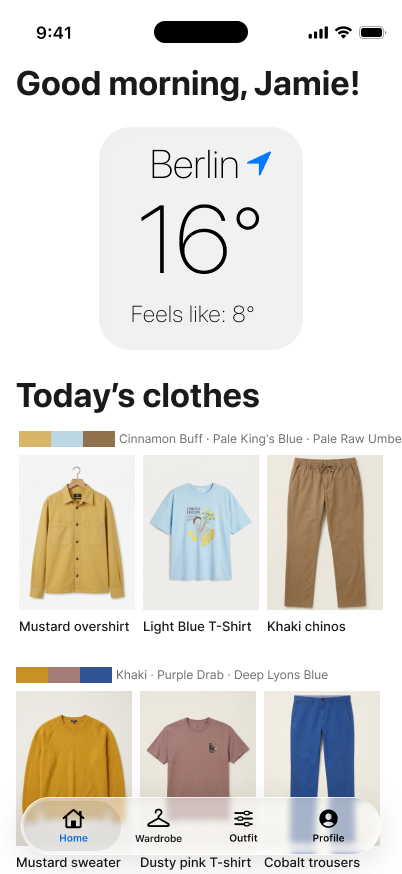
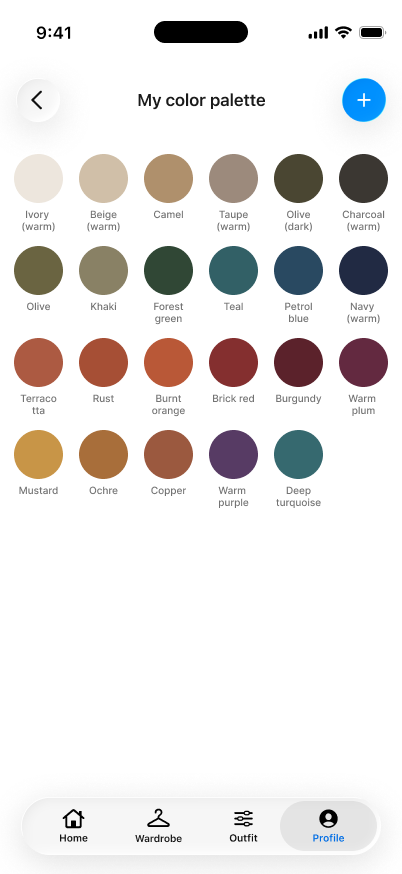
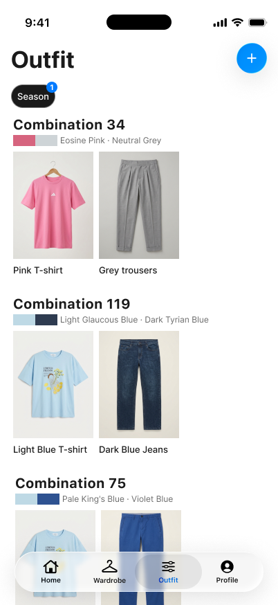
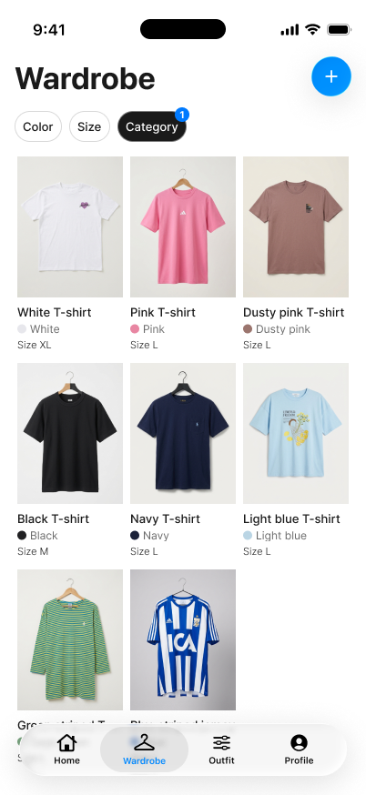
{ challenge }
Adults with a minimal wardrobe need to combine the clothes they already own with confidence, because they don’t know which colours work together, so they stick to dark “safe” ones. The challenge: help them do it without adding more choice, shopping or clutter.
{ impact }
26people surveyed
44%of their clothes worn regularly
77%felt unsure about an outfit recently
13 mina day in front of the wardrobe, about 3 days a year
{ approach }
A solo project, end to end: a survey with 26 people, 3 interviews, affinity mapping, persona, journey map, MoSCoW, information architecture, low-fi to hi-fi, and concept testing with three users. I built the prototype on a real test wardrobe, so every outfit uses clothes that actually exist.
{ users }
Meet Jamie, “The Safe Dresser”
One persona, built from the interviews: someone who doesn’t care much about clothes, but still doesn’t want to look bad.
Persona
Jamie, 30, Berlin
Freelancer with a small, practical wardrobe. Gets dressed in 2–3 minutes by sticking to dark colours he knows “work”, and asks his sister or partner for a second opinion. Uses Pinterest, YouTube and Google; shops at Uniqlo and secondhand.
Goals & pain points
What he needs
Know which colours suit him, wear more colour without standing out, and get more outfits from what he owns. The pain: he only finds out a colour doesn’t work after buying it, or right as he leaves the house.
{ feature map }
Four tabs, nothing more
The information architecture keeps the app small on purpose: Home, Wardrobe, Outfits and Profile. MoSCoW decided what stays out.
Home
- └ Login
- └ Weather (location)
- └ Today’s clothes
Wardrobe
- └ Items by category
- └ Add item
- └ Item detail · in 2 outfits
Outfits
- └ Season filter
- └ Saved outfits
- └ Combine items (Wada Sanzo)
Profile
- └ Find your colours
- └ Your colour palette
- └ Colour’s dashboard
- • A colour palette that suits you
- • A wardrobe of what you already own
- • Outfits combined from those items
- • Daily notifications
- • Shopping suggestions from other stores
- • Endless seasonal palettes
{ process }
From a survey to sticky notes
A survey with 26 people, then three interviews (P1–P3), clustered into an affinity diagram of 16 themes. Crazy 8s for ideas, and a look at Acloset and ALTA: both catalogue clothes well, but lean on shopping, AI suggestions and endless options.
- “With black on black you can’t go wrong.” — P2
- “Even though the fit was okay, the color was off, so I passed.” — P3
- “I try to basically minimize the choice a lot.” — P1
- “I don’t want to attract much attention… but I also don’t want to look bad.” — P1
- “It’s just frustrating when there’s a clash of opinions.” — P3
People don’t avoid colour, they can’t judge it until after buying.
Two pairs of trousers, the same shirt in a few colours.
A sister or partner says “no” right before leaving.
Venue, weather and comfort matter more than trends.
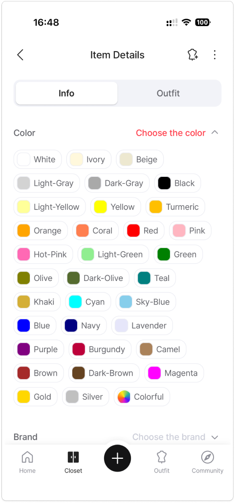
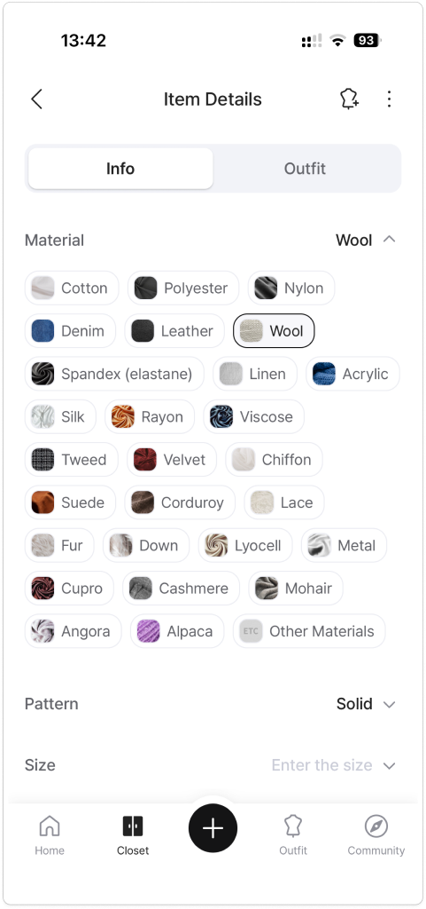
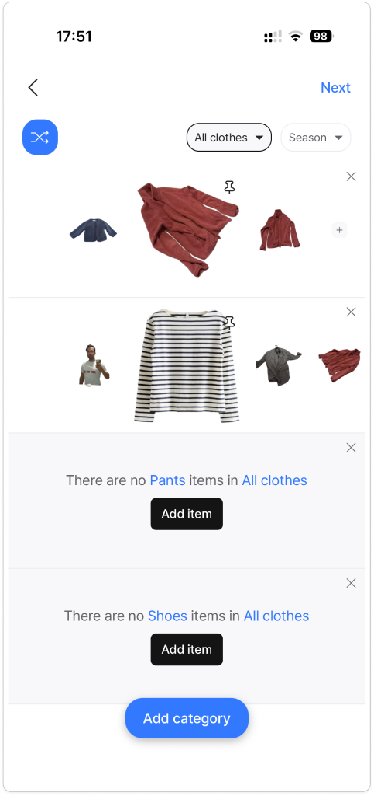
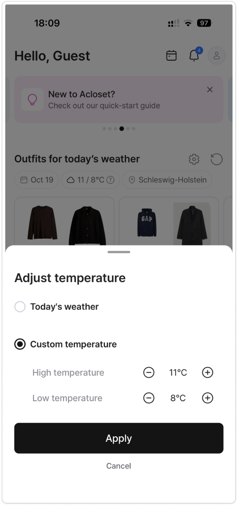
- • [What it does well]
- • [What I left out]
- • [What it does well]
- • [What I left out]
- • Store suggestions push buying, not wearing
- • No daily notifications
- • No endless seasonal palettes
{ iterations }
Three rounds, five changes
Low-fi (19.10), a “dumb” hi-fi (21.10) and the final hi-fi. Concept tests with three users changed five things before the final design.
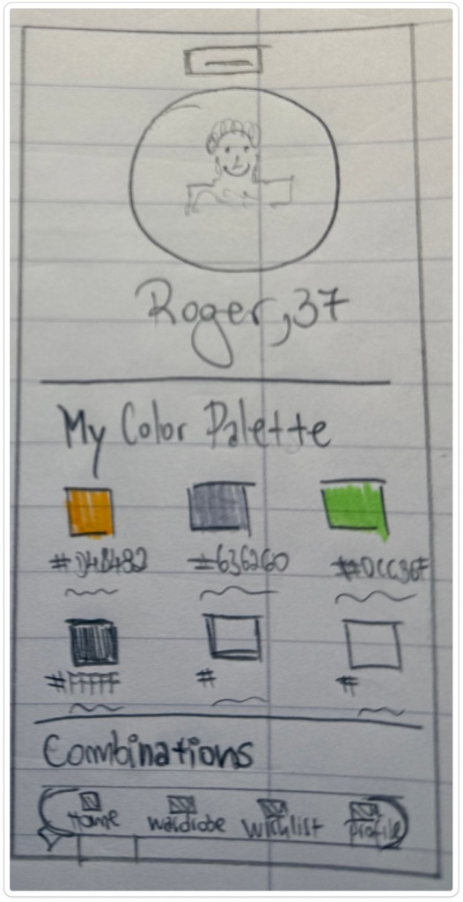
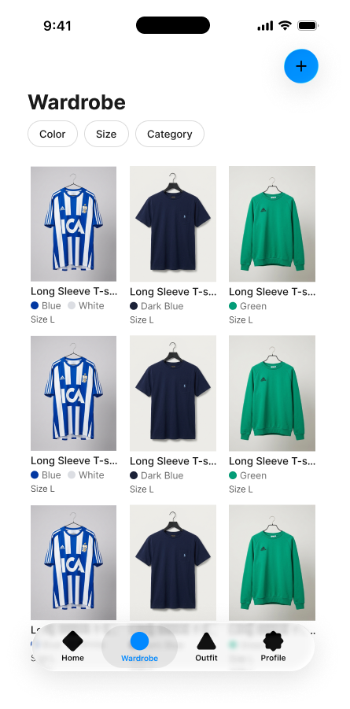
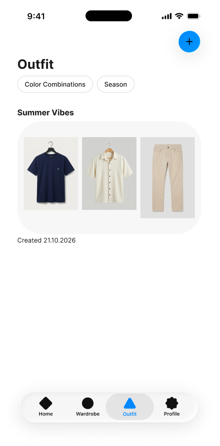
- • The home screen looked like a profile page
- • Exact hex codes felt technical
- • Items were sorted by upload order
- • A temperature filter felt too rigid
- • “Where else do I wear this item?”
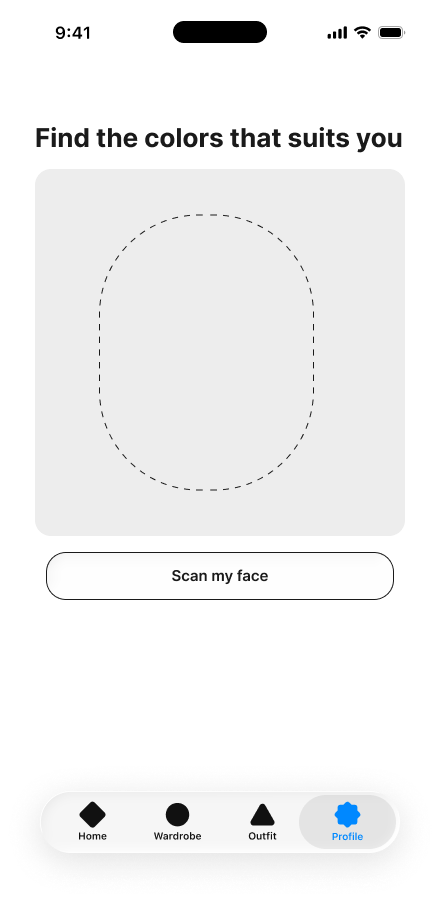
- • Home became a daily dashboard: weather + today’s clothes
- • Broad colour names: Sage green, Mustard, Indigo
- • Wardrobe filters by item type
- • Outfits filter by season
- • Item detail shows the outfits that use it
{ key decisions }
Four decisions that shaped it
Each one came from testing or from the research, not from taste.
Decision 1
Home shows today’s outfit
Testers read the first home as a profile page. Now it opens with the weather and an outfit you already own.
Decision 2
Seasons, not temperature
A temperature filter felt too rigid. Seasons match how people actually plan what to wear.
Decision 3
Colour names, not hex codes
Sage green, Mustard, Indigo: words people already use when they shop.
Decision 4
A 100-year-old colour system
Combinations from Sanzo Wada’s Dictionary of Color Combinations, only with items you own. No shopping, no daily notifications.
{ experiences }
Four everyday moments
The main flows of the final prototype, from opening the app to knowing which colours suit you.
Today’s outfit
Log in, and the home shows the Berlin weather and an outfit you already own.
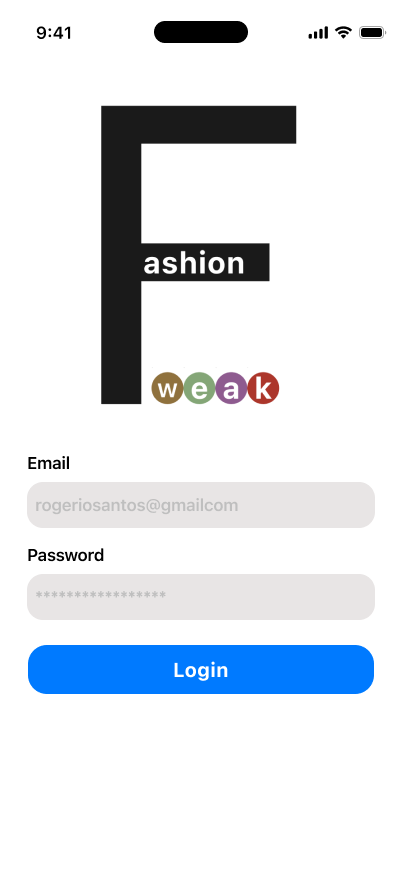
Your wardrobe by type
Filter your clothes by item type in two taps.
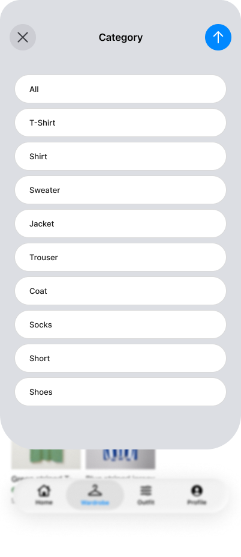
Outfits by season
Wada combinations from your own items, filtered by season.
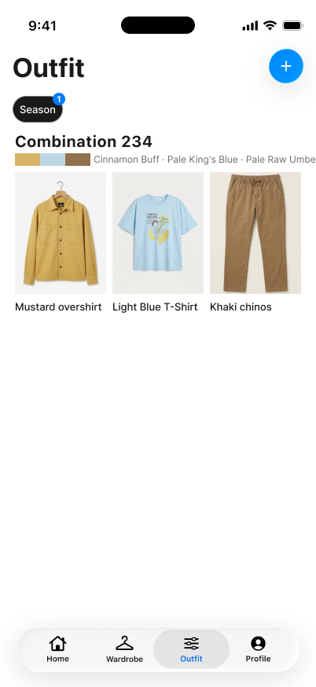
Colours that suit you
Your palette, and a dashboard of how many items you own in each colour.
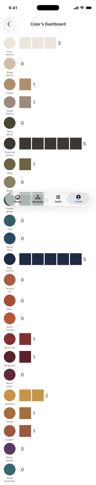
{ branding }
weAk = your weak spot, sorted
A logo that hides the joke in plain sight, and colour names taken from Sanzo Wada’s system instead of hex codes.
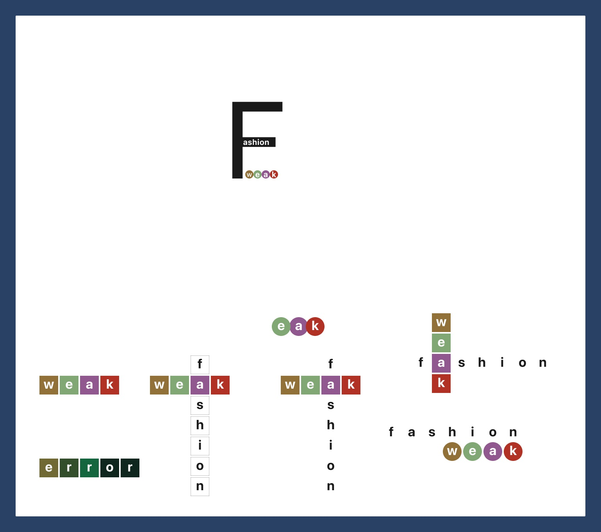
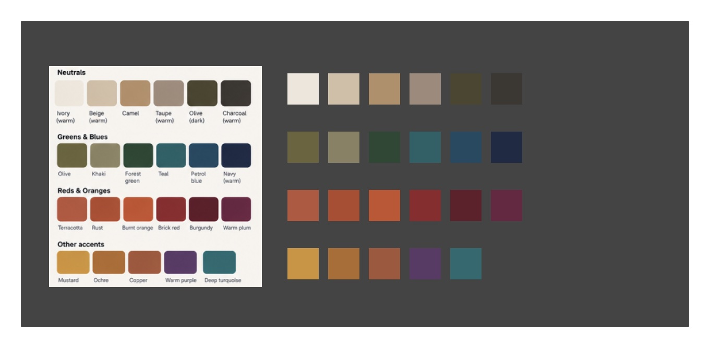
{ ai workflow }
AI as an assistant, not the designer
Every decision was checked against my own interviews and testing.
Research
Research
Drafted survey questions and helped cluster the affinity diagram.
Synthesis
Synthesis
Sharpened the persona and problem statement after feedback.
Structure
Structure
Mapped the information architecture and colour groups.
{ growth }
What’s next
Two features I’d design next, both from tester requests.
Next
Saved outfits, Wishlist and Settings
Design the three screens that are still missing from the Profile and Outfits tabs.
Later
Recolour your own clothes
Preview a piece you already own in a new colour before buying anything.
{ feedback }
What the final presentation taught me
Reviewers liked the problem, but said I told them the idea instead of leading them through it. Here is what I’m changing.
The “black on black” quote won the room over: one reviewer said they would have invested at that line.
Berlin as the setting connected with everyone.
- • Align the problem statement with the MVP: it’s about combining what you already own.
- • Show how the app knows your colours: a colour analysis, by a professional or a photo scan, sets the palette.
- • Show Wada Sanzo inside the app: “Combination 242 · from Wada Sanzo’s book”.
- • Use two clear names: “colours that suit you” and “colours you own”.
- • Explain the name in one line: weAk = your weak spot, sorted.